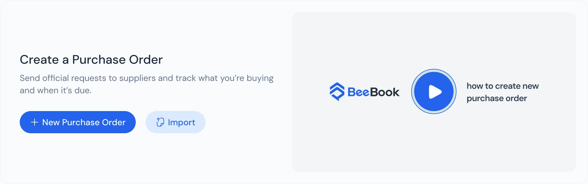
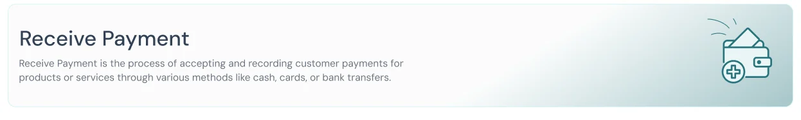

BeeBooks
Accounting software for small business owners who never trained as accountants. The AI does the typing. The owner makes every decision.
 Pridesys IT
Pridesys IT- Sep 2025 to May 2026
- books.beeqube.com
Shop owners, freelancers and solo founders who keep their own books in whatever time is left over.
Accounting software assumes you already know accounting. In our interviews, its words put owners off more than its price did.
I sat in every owner interview, helped turn what we heard into a persona, and drew the wireframes with the design team.
Plain words on every screen, and an assistant that fills in forms from one sentence. The AI never sends anything. The owner checks the form and presses Send.
By hand
By voice, with Bee AI
A re-creation of the BeeBooks invoice form, built for this page. Left: one invoice by hand, a click or a keystroke for every field. Right: the same invoice from one spoken sentence. Bee AI fills the form and stops. The owner reads it and presses Send.
Who it is for
QuickBooks is built for accountants who think in debits and credits. Zoho Books mostly serves companies that already run on Zoho. BeeBooks was meant for the people neither of them had in mind.
The persona we built from the interviews runs a small shop. She tracks sales in a notebook and a spreadsheet, has no time to sit at a desk, and dreads tax season. She once tried QuickBooks and cancelled within a week, afraid of messing up the journal entries. At the end of the day she wants one answer: did I make a profit?
What we heard
We interviewed more than 20 small business owners about why they had not chosen tools like QuickBooks. The answer was not price. It was fear. People would not click buttons labelled "Journal Entry", "Reconciliation" or "Chart of Accounts", because they did not know what the words meant.
That changed the brief. The software was not missing features. It was asking owners to think like accountants before it would help them. We wrote the problem down in one line: people spend too long finding their way through complex menus to do simple tasks.
How we worked
- Interviews with more than 20 owners, then a persona.
- A one-line problem statement, and the idea of an active assistant: software that does the task for you, not a place to type it in.
- Wireframes with the design team, including the Bee AI panel and voice-first forms.
- Two-week sprints with engineering. The voice invoice was split into small pieces, from turning speech into text to picking out the client's name.
- Usability tests with company staff acting as new users, then changes to the dashboard and the tax labels.
How we designed it
1. Say it in the owner's words
What we saw. Accounting terms stopped owners before they started. In testing, people were confused by labels like "VAT Output".
What we chose. Plain English for every label, so "VAT Output" became "Tax you collected". Each task opens with one line on what it is for, and many come with a short how-to video. Icons sit beside the words, not in place of them.


Two task openers from the BeeBooks design, each explained in one line before you start.
2. Let the AI type, and keep the decision with the owner
What we saw. Owners have little time at a desk, and menus took most of it. Our problem statement was about exactly that.
What we chose. An assistant instead of menus. Bee AI sits one click away on every screen. You say or type what you need, and it fills in the client, items, amounts and dates. Then it stops.

The invoices page with Bee AI open on the right. You type or speak to it in the box at the bottom.
The AI never sends. It can fill an invoice, but it cannot send one. The filled form waits for the owner to read it, correct it and press Send. An invoice goes out under the owner's name, so the last click is always theirs.
3. Give the answer, keep the working out of sight
What we saw. Engineering had built strong AI predictions for financial ratios. Put on one screen, they made the first dashboard "intimidatingly complex" for testers acting as non-accountants.
What we chose. Keep the calculations behind the scenes, and say the result in a sentence an owner can act on, like "Cash flow looks good". The bar charts gave way to green, yellow and red health scores.

The launched dashboard opens with a greeting and four figures an owner asks about: cash, money owed to them, money they owe, and profit.
What happened
BeeBooks launched and is live at books.beeqube.com. By December 2025, the ledger, invoicing and expense modules worked, and the voice commands and Bee AI were running in beta.
What we never measured. Our usability tests used company staff acting as new users, not real shop owners. So we know the design made sense to people inside the company. We do not yet know how well it works for the owners it was built for, and I would not quote numbers until someone tests it with them.